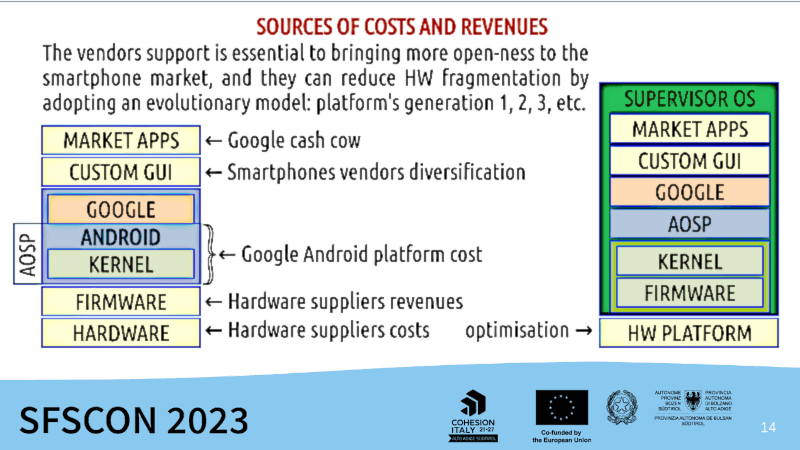
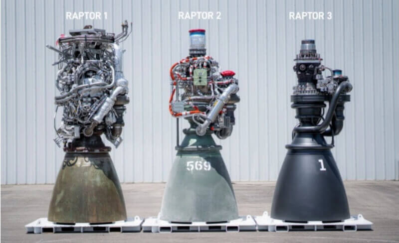
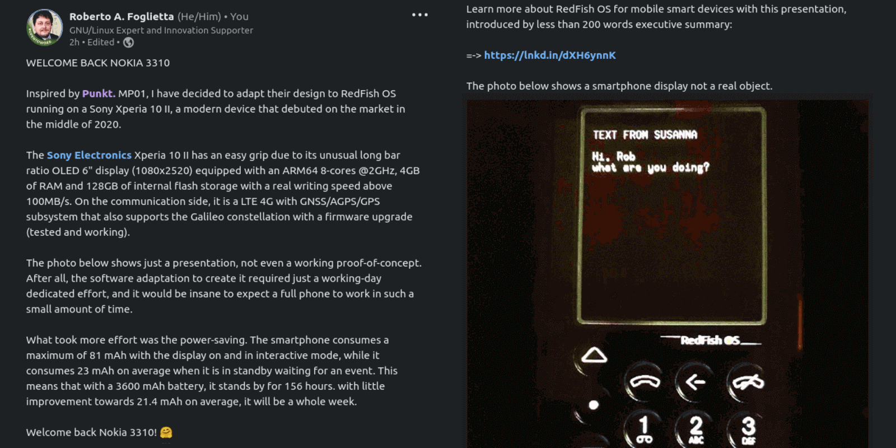

Linux, Android & RedFish OS
Published Oct 13, 2024 - origin LinkedIn post
This article is based on a post written in Italian and
published on LinkedIn the same day. However, the content of the article difers from a mere translation in English.
Premise
11th October 2024 - Google is preparing to let you run Linux apps on Android, just like Chrome OS. Google is developing the framework to let you run Debian in a virtual machine on your Android device. - lnkd.in/dPG79nyf
Engineers at Google started work on a new Terminal app for Android a couple of weeks ago. This Terminal app is part of the Android Virtualization Framework (AVF) and contains a WebView that connects to a Linux virtual machine via a local IP address, allowing you to run Linux commands from the Android host. Initially, you had to manually enable this Terminal app using a shell command and then configure the Linux VM yourself. However, in recent days, Google began work on integrating the Terminal app into Android as well as turning it into an all-in-one app for running a Linux distro in a VM.
In the frst place, it must be said that Google is not redefining the architecture of Android but only providing a user-space tool that allows Debian to run on their mobile platform and then for any other derived Linux distribution, also.
Google AVF architecture
Curious because considering that Android's kernel is actually Linux, it would be useful to do the opposite: run Linux and virtualise Android. In fact, it already does, Android runs by a hypervisor called pKVM.
However, not with a virtual machine, which would significantly degrade the system's performance (usually by 1/2), but through segregation, which is absolutely possible, since unlike a generic VM, execution on the processor is supervised but transparent.
Moreover, ARM CPUs already have specific instructions to achieve this type of segregation at the code execution level (e.g. restricting access to RAM to certain segments, only those allocated).
RedFish OS approach
According to the Android documentation, everything is just in place: Linux kernel, hypervisor, separation of layers, but at the same time there is nothing like RedFish OS.
It seems that there is everything and instead there is nothing (cit.) simply because such architecture is ‘normal’ -made at the state of art - but in its development never took into account devices hardware fragmentation and the optimization of costs of scale for a mobile devices market that barely did not even exist before Android or not at that scale.
RedFish OS advantages
What are the advantages of the RedFish OS approach?
The advantages of an Android container are that all the hardware management part would go out of the picture, so Android would no longer be an operating system but an application run-time framework and a development environment for apps. Just as it is today, but in a container. As it is today, precisely.

This, in essence, is the concept behind RedFish OS. It is not everything, but it is the fundamental part. Hence, its nature of a dual-mode bootable image for rescue/maintenance and supervised execution of the Android system.
As the rest of its value-added functionalities would rely on these two market separation without which it could be just an app with root privileges. Like a VM for running Debian applications within the Android platform like Chrome-OS is able to do.
Consultancy
This case showed the importance of the consultancy.
Consultancy gives its best when a company needs a vertical specialist in a specific topic for a limited amount of time and that verticalization is hard to find around or it would take too much time developing internally.
On the other side of the spectrum, consultancy gives its best when a project is going to face a challenge never faced before. In this case, a multiply-mildly verticalised specialist is essential.
Someone that is not strongly tied with a technology or a view, in particular but s/he developed enough experience and a method good enough to drive STEM people further the current state of the art.
The verb 'to drive' has been purposely used here because the mystic and vague idea of the leadership did not work in facing the unknown costs effort and when the quest is quite challenging.
People will not follow in those conditions and not even wish to be pushed into it. Hence, driving is the last resort or accepting a no-go as an alternative option.
However, a driver is doomed to not remain in the position after the convoy reaches its destination. Because, people do not like to be driven but they prefer to follow someone around Candy Land where each step gives them a little satisfaction.
Plus, there is always another convoy that needs a driver to cross a desert where there is not a candy for each step but just effort.
Simplicity
Simplicity is the ultimate form of sophistication. The STEM people are able to create impressive clockworks in which the complications are managed precisely and beautifully. Swiss luxury watch manufacturing is a nice example of this.
Also the engines of the Space Shuttle belong within this example. However,with the Starship's launcher project by Elon Musk's industries we saw something going further: the Raptor engine in its 1st generation was a beautiful clockwork of complications.

Raptor engine evolution among three generation
Was it necessary achieve such sophistication to achieve simplicity? The number of propulsion engines in the Space Shuttle was 3 while the Starship's launcher has more than 30. An order of magnitude greater.
Such a new scale required dropping any kind of complication in order to cut every single cost including those related to maintenance and because each piece is at risk of failing during a launch. Hence, as less pieces are involved as lower risk of encountering a failure.
One of the basic ways to reduce complications is disengagement or separation but layers are a kind of separation. The disengagement principle also implies to create some degrees of independence (freedom) among some macro-layers.
In fact, a compact/rigid system has several good properties but flexibility and resilience are not among them, thus also security without a complete redundancy.
An example
The photo below shows a smartphone display not a real object.

Screenshot 2023-09-21 - right click to enlarge in a new window
Inspired by Punkt. MP01, I have decided to adapt their design to RedFish OS running on a Sony Xperia 10 II, a modern device that debuted on the market in the middle of 2020.
The Sony Electronics Xperia 10 II has an easy grip due to its unusual long bar ratio OLED 6" display (1080x2520) equipped with an ARM64 8-cores @2GHz, 4GB of RAM and 128GB of internal flash storage with a real writing speed above 100MB/s. On the communication side, it is a LTE 4G with GNSS/AGPS/GPS subsystem that also supports the Galileo constellation with a firmware upgrade (tested and working).
The photo below shows just a presentation, not even a working proof-of-concept. After all, the software adaptation to create it required just a working-day dedicated effort, and it would be insane to expect a full phone to work in such a small amount of time.
What took more effort was the power-saving. The smartphone consumes a maximum of 81 mAh with the display on and in interactive mode, while it consumes 23 mAh on average when it is in standby waiting for an event. This means that with a 3600 mAh battery, it stands by for 156 hours. with little improvement towards 21.4 mAh on average, it will be a whole week.
Welcome back Nokia 3310!
Conclusion
The fortune of IBM was being forced by the US anti-trust to release the specification for free-as-free-beer their IBM AT PC standards.
Comparing the AT architecture with the ARM one, it was mediocre at those times as well. Despite its shortcomings, being a universal and free-of-charge standard made it the most successful HW platform until the advent of the ARM based mobile devices.
Instead, their proprietary and hard-to-copy DR-DOS did not have the same fortune compared to the mediocre MS-DOS and easy-to-copy. That made the beginning of the Microsoft fortune: the virality of being duplicated almost without restrictions and then spreading around even without any marketing pressure to push it.
Hence, it does not matter how good Android is. It spread around earning a 2x size market in the number of devices in circulation (or in use) compared to the completely closed and proprietary alternative by Apple. However, not so much in net revenues and in particular per unit.
The key to change this scenario for the better of all the players relies in introducing a degree of freedom among the macro-layers of the Android architecture.
This will bring more flexibility and those who adopt the better-than-the-previous generation device models like Apple did and does, will achieve a great advantage.
This despite flexibility will also help those who prefer to rely on the hardware fragmentation for increasing their revenues but gross revenues are not necessarily net incoming.
People, who can put some more extra money on buying a device, will prefer to buy the Nth generation that a device that brought them good value/service in the past rather than be tempted by cheaper and unknown alternatives.
Still, cheaper and soon-unsupported alternatives will always be in the wild because as much the confusion as the quest for perfection are both two fundamental traits of human nature whatever the market segmentation is or will be.
1. RedFish OS recovery image reboot (2023-08-20)
2. RedFish OS recovery image boots a freshly installed SailFish OS (2023-08-30)
3. RedFish OS recovery image install SailFish OS by the telnet menu (2023-08-31)
4. RedFish OS speech at SFSCON 2023 in Bozen, Italy (2023-11-10)
My SCRUM in a nutshell a single A4 slide, download in PDF (2023-04-13)
P²C² management style github project homepage (2023-04-29)
RedFish OS project github project homepage (2023-07-12)
RedFish OS business presentation with an executive introduction, PDF download (2023-09-25)
RedFish OS papers collection prepared and/or collected SFSCON 2023 presentation (2023-11-11)
Share alike
© 2024, Roberto A. Foglietta <roberto.foglietta@gmail.com>, CC BY-NC-ND 4.0